Inverted Pendulum, Magnetic Levitation, and Cart on a Track
System Modeling and Control · Chapter 13
Contents
Inverted-Pendulum Modeling
Linearization About Equilibrium Points
Magnetic-Levitation Modeling
Linear and Transfer-Function Models
Cart-on-a-Track Modeling
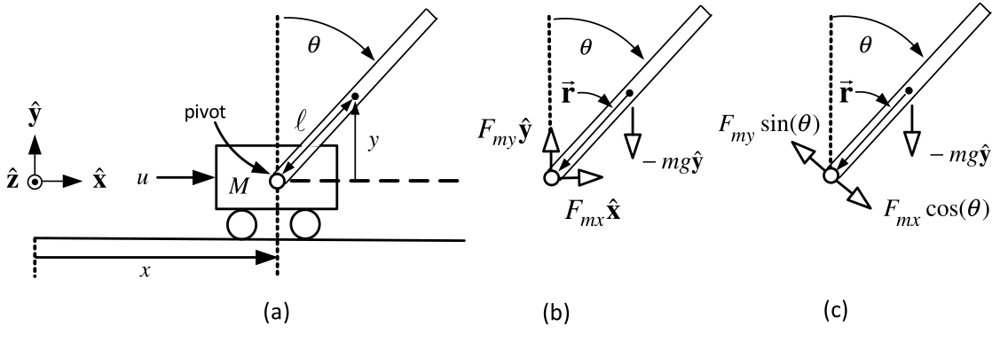
Control Objective
Keep the pendulum rod upright (vertical so that \(\theta =0\)).
The input force \(u(t)\) is to be used to keep \(\theta =0.\)
In this chapter we derive the mathematical model of the inverted pendulum.
Control of the pendulum is considered using nested PD controllers.

\(u(t)\) is the force on the cart in the horizontal direction.
The center of mass (CoM) of the pendulum rod is at \((x+\ell \sin (\theta ),y).\)
The pendulum rod of length \(2\ell\) is free to rotate about the pivot.
\(M\) is the cart’s mass and \(m\) is the mass of the pendulum rod.
There is a sensor to measure the angle \(\theta\) between the rod and the vertical.
The pivot exerts a force \(\boldsymbol{F}_{m}\) on \(m\) through the rod. \[\boldsymbol{F}_{m}=F_{mx}\mathbf{\hat{x}}+F_{my}\mathbf{\hat{y}}\]
\(-\boldsymbol{F}_{m}=-F_{mx}\mathbf{\hat{x}}-F_{my}\mathbf{\hat{y}}\) is the reaction force of the rod on the cart.
The center of mass (CoM) of the pendulum rod is at \((x+\ell \sin (\theta ),y).\)
The axis of rotation for the rod is in the \(-\mathbf{\hat{z}}\) direction through its CoM.

Equations of linear motion for \(m\): \[\begin{aligned} m\frac{d^{2}}{dt^{2}}\left( x+\ell \sin (\theta )\right) &=F_{mx} \\ m\frac{d^{2}}{dt^{2}}\left( \ell \cos (\theta )\right) &=F_{my}-mg \end{aligned}\]

The axis of rotation for the rod is in the \(-\mathbf{\hat{z}}\) direction through its CoM.
If your right thumb is pointing in the \(-\mathbf{\hat{z}}\) direction, then your fingers
are pointing in the positive \(\theta\) direction.
\(J=m\ell ^{2}/3\) is the moment of inertia of rod with respect to its axis of rotation.
The rod is accelerating, but \[\tau =J\dfrac{d^{2}\theta }{dt^{2}}\] is still valid as the rotation axis is through the CoM.

The gravitational force \(-mg\mathbf{\hat{y}}\) does not produce any torque on the rod\(.\)
- It acts through the center of mass so its moment arm zero.
The force \(F_{my}\mathbf{\hat{y}}\) has the component \(F_{my}\sin (\theta )\) perpendicular to the rod.
The force \(F_{mx}\mathbf{\hat{x}}\) has the component \(F_{mx}\cos (\theta )\) perpendicular to the rod. \(.\)
Eqn of rotational motion: \(\ J\dfrac{d^{2}\theta }{dt^{2}}=\ell F_{my}\sin (\theta )-\ell F_{mx}\cos (\theta ).\)
Eqn of motion of the cart: \(\ M\dfrac{d^{2}x}{dt^{2}}=u(t)-F_{mx}.\)

Complete set of equations of motion: \[\begin{aligned} m\frac{d^{2}}{dt^{2}}\left( x+\ell \sin (\theta )\right) &=F_{mx} \\ m\frac{d^{2}}{dt^{2}}\left( \ell \cos (\theta )\right) &=F_{my}-mg \\ J\frac{d^{2}\theta }{dt^{2}} &=\ell F_{my}\sin (\theta )-\ell F_{mx}\cos (\theta ) \\ M\frac{d^{2}x}{dt^{2}} &=u(t)-F_{mx}. \end{aligned}\]
\[\begin{aligned} m\frac{d^{2}}{dt^{2}}\left( x+\ell \sin (\theta )\right) &=F_{mx} \\ m\frac{d^{2}}{dt^{2}}\left( \ell \cos (\theta )\right) &=F_{my}-mg \\ J\frac{d^{2}\theta }{dt^{2}} &=\ell F_{my}\sin (\theta )-\ell F_{mx}\cos (\theta ) \\ M\frac{d^{2}x}{dt^{2}} &=u(t)-F_{mx}. \end{aligned}\] Expand: \[\begin{aligned} m\frac{d^{2}x}{dt^{2}}-m\ell \sin (\theta )\left( \frac{d\theta }{dt} \right) ^{2}+m\ell \cos (\theta )\frac{d^{2}\theta }{dt^{2}} &=F_{mx} \\ -m\ell \cos (\theta )\left( \frac{d\theta }{dt}\right) ^{2}-m\ell \sin (\theta )\frac{d^{2}\theta }{dt^{2}} &=F_{my}-mg \\ \ell F_{my}\sin (\theta )-\ell F_{mx}\cos (\theta ) &=J\frac{d^{2}\theta }{ dt^{2}} \\ u(t)-F_{mx} &=M\frac{d^{2}x}{dt^{2}}. \end{aligned}\]
\[\begin{aligned} m\frac{d^{2}x}{dt^{2}}-m\ell \sin (\theta )\left( \frac{d\theta }{dt} \right) ^{2}+m\ell \cos (\theta )\frac{d^{2}\theta }{dt^{2}} &=F_{mx} \\ -m\ell \cos (\theta )\left( \frac{d\theta }{dt}\right) ^{2}-m\ell \sin (\theta )\frac{d^{2}\theta }{dt^{2}} &=F_{my}-mg \\ \ell F_{my}\sin (\theta )-\ell F_{mx}\cos (\theta ) &=J\frac{d^{2}\theta }{ dt^{2}} \\ u(t)-F_{mx} &=M\frac{d^{2}x}{dt^{2}}. \end{aligned}\]
Eliminate the reaction forces \(F_{mx},F_{my}\). \[\begin{aligned} mg\ell \sin (\theta )-m\ell \cos (\theta )\frac{d^{2}x}{dt^{2}} &=(J+m\ell ^{2})\frac{d^{2}\theta }{dt^{2}} \\ (M+m)\frac{d^{2}x}{dt^{2}}+m\ell \cos (\theta )\frac{d^{2}\theta }{dt^{2}} -m\ell \omega ^{2}\sin (\theta ) &=u(t). \\ \end{aligned}\] Or \[\left[ \begin{array}{cc} J+m\ell ^{2} & m\ell \cos (\theta ) \\ m\ell \cos (\theta ) & M+m \end{array} \right] \left[ \begin{array}{c} d^{2}\theta /dt^{2} \\ d^{2}x/dt^{2} \end{array} \right] =\left[ \begin{array}{c} mg\ell \sin (\theta ) \\ m\ell \omega ^{2}\sin (\theta )+u(t) \end{array} \right] .\]
Define \[\begin{aligned} H(\theta)&\triangleq \begin{bmatrix} J+m\ell^2 & m\ell\cos\theta\\ m\ell\cos\theta & M+m \end{bmatrix},\\ D(\theta)&\triangleq\det H(\theta) =JM+Jm+Mm\ell^2+m^2\ell^2\sin^2\theta. \end{aligned}\]
The acceleration vector is \[\begin{aligned} \begin{bmatrix}\ddot\theta\\\ddot x\end{bmatrix} &=H(\theta)^{-1} \begin{bmatrix} mg\ell\sin\theta\\ m\ell\omega^2\sin\theta+u \end{bmatrix}\\[0.4em] &=\frac{1}{D(\theta)} \left\{ \begin{bmatrix} gm\ell(M+m)\sin\theta-m^2\ell^2\omega^2\cos\theta\sin\theta\\ m\ell(J+m\ell^2)\omega^2\sin\theta-gm^2\ell^2\cos\theta\sin\theta \end{bmatrix} +\begin{bmatrix} -m\ell\cos\theta\\ J+m\ell^2 \end{bmatrix}u \right\}. \end{aligned}\]
\(v\triangleq \dfrac{dx}{dt},\quad \omega =\dot{\theta}=\dfrac{d\theta }{dt}\).
Define \[D(\theta)\triangleq JM+Jm+Mm\ell ^2+m^2\ell ^2\sin^2\theta.\]
Then \[\begin{aligned} \frac{dx}{dt} &=v \\ \frac{dv}{dt} &=\frac{m\ell (J+m\ell ^2)\omega^2\sin\theta -gm^2\ell^2\cos\theta\sin\theta}{D(\theta)} +\frac{J+m\ell^2}{D(\theta)}u \\ \frac{d\theta }{dt} &=\omega \\ \frac{d\omega }{dt} &=\frac{gm\ell (M+m)\sin\theta -m^2\ell^2\omega^2\cos\theta\sin\theta}{D(\theta)} -\frac{m\ell\cos\theta}{D(\theta)}u. \end{aligned}\]
The state \(z\) is simply the vector \[z\triangleq \left[ \begin{array}{c} x \\ v \\ \theta \\ \omega \end{array} \right]\]
\(x,v,\theta ,\) and \(\omega\) are called the state variables .
Statespace Form
The left-hand side contains only a first-order derivative.
The right-hand side of each eqn has only state variables and no derivatives.
The statespace model is nonlinear for which a control design is not known.
We simplify the model in order to be able to design a controller.
The objective is to keep the pendulum upright, i.e., \(\theta \approx 0,\omega =\dot{\theta}\approx 0\).
Make these approximations in the model by setting \[\begin{aligned} \sin (\theta ) &\approx &\theta \\ \cos (\theta ) &\approx &1 \\ \omega ^{2}\sin (\theta ) &\approx &\omega ^{2}\theta \approx 0 \\ \cos \theta \sin \theta &\approx &1\cdot \theta =\theta \\ \sin ^{2}(\theta ) &\approx &\theta ^{2}\approx 0 \\ \omega ^{2}\cos \theta \sin \theta &\approx &\omega ^{2}\cdot 1\cdot \theta \approx 0. \end{aligned}\]
E.g., if \(\omega =0.01\) (small), then \(\omega ^{2}=0.0001\) is very small.
- So keep terms with just \(\omega ,\) but discard the really small terms \(\omega ^{2}\).
\[\begin{aligned} \frac{dv}{dt} &=\frac{m\ell (J+m\ell ^{2})\omega ^{2}\sin \theta -gm^{2}\ell ^{2}\cos \theta \sin \theta }{JM+Jm+Mm\ell ^{2}+m^{2}\ell ^{2}\sin ^{2}(\theta )}+ \\ &&\frac{J+m\ell ^{2}}{JM+Jm+Mm\ell ^{2}+m^{2}\ell ^{2}\sin ^{2}(\theta )}u \\ \frac{d\omega }{dt} &=\frac{gm\ell (M+m)\sin \theta -m^{2}\ell ^{2}\omega ^{2}\cos \theta \sin \theta }{JM+Jm+Mm\ell ^{2}+m^{2}\ell ^{2}\sin ^{2}(\theta )}- \\ &&\frac{m\ell \cos \theta }{JM+Jm+Mm\ell ^{2}+m^{2}\ell ^{2}\sin ^{2}(\theta )}u. \end{aligned}\]
Use the above approximations to obtain: \[\begin{aligned} \frac{dv}{dt} &=\frac{-gm^{2}\ell ^{2}}{JM+Jm+Mm\ell ^{2}}\theta +\frac{ J+m\ell ^{2}}{JM+Jm+Mm\ell ^{2}}u \\ \frac{d\omega }{dt} &=\frac{gm\ell (M+m)}{JM+Jm+Mm\ell ^{2}}\theta -\frac{ m\ell }{JM+Jm+Mm\ell ^{2}}u. \end{aligned}\]
\[\begin{aligned} \frac{dx}{dt} &=v \\ \frac{dv}{dt} &=-\frac{gm^{2}\ell ^{2}}{JM+Jm+Mm\ell ^{2}}\theta +\frac{ J+m\ell ^{2}}{JM+Jm+Mm\ell ^{2}}u \\ \frac{d\theta }{dt} &=\omega \\ \frac{d\omega }{dt} &=\frac{mg\ell (M+m)}{JM+Jm+Mm\ell ^{2}}\theta -\frac{ m\ell }{JM+Jm+Mm\ell ^{2}}u. \end{aligned}\]
In matrix form \[\underset{dz/dt}{\underbrace{\left[ \begin{array}{c} dx/dt \\ dv/dt \\ d\theta /dt \\ d\omega /dt \end{array} \right] }}=\underset{A}{\underbrace{\left[ \begin{array}{cccc} 0 & 1 & 0 & 0 \\ 0 & 0 & -\dfrac{gm^{2}\ell ^{2}}{Mm\ell ^{2}+J(M+m)} & 0 \\ 0 & 0 & 0 & 1 \\ 0 & 0 & \dfrac{mg\ell (M+m)}{Mm\ell ^{2}+J(M+m)} & 0 \end{array} \right] }}\underset{z}{\underbrace{\left[ \begin{array}{c} x \\ v \\ \theta \\ \omega \end{array} \right] }}+\underset{b}{\underbrace{\left[ \begin{array}{c} 0 \\ \dfrac{J+m\ell ^{2}}{Mm\ell ^{2}+J(M+m)} \\ 0 \\ -\dfrac{m\ell }{Mm\ell ^{2}+J(M+m)} \end{array} \right] }}u.\]
\[\underset{dz/dt}{\underbrace{\left[ \begin{array}{c} dx/dt \\ dv/dt \\ d\theta /dt \\ d\omega /dt \end{array} \right] }}=\underset{A}{\underbrace{\left[ \begin{array}{cccc} 0 & 1 & 0 & 0 \\ 0 & 0 & -\dfrac{gm^{2}\ell ^{2}}{Mm\ell ^{2}+J(M+m)} & 0 \\ 0 & 0 & 0 & 1 \\ 0 & 0 & \dfrac{mg\ell (M+m)}{Mm\ell ^{2}+J(M+m)} & 0 \end{array} \right] }}\underset{z}{\underbrace{\left[ \begin{array}{c} x \\ v \\ \theta \\ \omega \end{array} \right] }}+\underset{b}{\underbrace{\left[ \begin{array}{c} 0 \\ \dfrac{J+m\ell ^{2}}{Mm\ell ^{2}+J(M+m)} \\ 0 \\ -\dfrac{m\ell }{Mm\ell ^{2}+J(M+m)} \end{array} \right] }}u.\]
Standard linear approximate model of the inverted pendulum.
We show with \(u(t)\) of the form \[u(t)=-k_{1}x(t)-k_{2}v(t)-k_{3}\theta (t)-k_{4}\omega (t)\] \(k_{1},k_{2},k_{3},k_{4}\) can be chosen so that \((x(t),v(t),\theta (t),\omega (t))\) stays close to \((0,0,0,0). \ \Longrightarrow\) The pendulum stays upright and the cart stays at \(x=0.\)
The above is called a linear statespace model.
The adjective “linear” refers to the form \[\frac{dz}{dt}=Az+bu.\] I.e., \(Az\) is linear in \(z\) and \(bu\) is linear in \(u\).
Take the Laplace transform of \[\frac{d\omega }{dt}=\frac{d^{2}\theta }{dt^{2}}=\frac{mg\ell (M+m)}{ JM+Jm+Mm\ell ^{2}}\theta -\frac{m\ell }{JM+Jm+Mm\ell ^{2}}u\] to obtain \[s^{2}\theta (s)-s\theta (0)-\dot{\theta}(0)=\underset{\alpha ^{2}}{ \underbrace{\dfrac{mg\ell (M+m)}{Mm\ell ^{2}+J(M+m)}}}\theta (s)-\underset{ \kappa m\ell }{\underbrace{\dfrac{m\ell }{Mm\ell ^{2}+J(M+m)}}}U(s).\] With the definitions \[\alpha ^{2}\triangleq \dfrac{mg\ell (M+m)}{Mm\ell ^{2}+J(M+m)}, \kappa =\frac{1}{Mm\ell ^{2}+J(M+m)}\] we have \[s^{2}\theta (s)-\alpha ^{2}\theta (s)=-\kappa m\ell U(s)+s\theta (0)+\dot{ \theta}(0)\] or \[\theta (s)=\text{}\underset{\text{transfer function}}{\underbrace{-\frac{ \kappa m\ell }{s^{2}-\alpha ^{2}}}}U(s)+\frac{s\theta (0)+\dot{\theta}(0) }{s^{2}-\alpha ^{2}}.\]
- \(\mathcal{L}\{\ddot{\theta}(t)\}=s\mathcal{L}\{\dot{\theta}(t)\}-\dot{\theta}(0)=s\left(s\mathcal{L}\{\theta(t)\}-\theta(0)\right)-\dot{\theta}(0).\)
\[\theta (s)=\text{}\underset{\text{transfer function}}{\underbrace{-\frac{ \kappa m\ell }{s^{2}-\alpha ^{2}}}}U(s)+\frac{s\theta (0)+\dot{\theta}(0) }{s^{2}-\alpha ^{2}}.\]
Open-loop poles at \(s=-\alpha <0,\alpha >0.\)
Open-loop system is unstable.
From the statespace model \[\frac{dv}{dt}=\frac{d^{2}x}{dt^{2}}=-\frac{mgm\ell ^{2}}{Mm\ell ^{2}+J(M+m)} \theta +\dfrac{J+m\ell ^{2}}{Mm\ell ^{2}+J(M+m)}u.\] Laplace transform: \[s^{2}X(s)-sx(0)-\dot{x}(0)=-\kappa mgm\ell ^{2}\theta (s)+\kappa (J+m\ell ^{2})U(s)\] or \[\begin{aligned} X(s) &=-\kappa mgm\ell ^{2}\frac{1}{s^{2}} \theta (s)+\kappa (J+m\ell ^{2})\frac{1}{s^{2}}U(s)+\frac{sx(0)+\dot{x}(0)}{ s^{2}} \\ &=-\kappa mgm\ell ^{2}\frac{1}{s^{2}}\left( -\frac{\kappa m\ell }{ s^{2}-\alpha ^{2}}U(s)+\frac{s\theta (0)+\dot{\theta}(0)}{s^{2}-\alpha ^{2}} \right) +\kappa (J+m\ell ^{2})\frac{1}{s^{2}}U(s)+\frac{sx(0)+\dot{x}(0)}{ s^{2}} \\ &=\kappa mgm\ell ^{2}\frac{1}{s^{2}}\frac{\kappa m\ell }{ s^{2}-\alpha ^{2}}U(s)+\kappa (J+m\ell ^{2})\frac{1}{s^{2}} U(s)-\kappa mgm\ell ^{2}\frac{1}{s^{2}}\frac{s\theta (0)+\dot{\theta} (0)}{s^{2}-\alpha ^{2}}+\frac{sx(0)+\dot{x}(0)}{s^{2}} \\ &=\frac{\kappa mgm\ell ^{2}\kappa m\ell +\kappa (J+m\ell ^{2})(s^{2}-\alpha ^{2})}{s^{2}(s^{2}-\alpha ^{2})}U(s)-\kappa mgm\ell ^{2} \frac{1}{s^{2}}\frac{s\theta (0)+\dot{\theta}(0)}{s^{2}-\alpha ^{2}}+\frac{ sx(0)+\dot{x}(0)}{s^{2}} \\ && \end{aligned}\]
From previous slide: \[X(s)=\frac{\kappa mgm\ell ^{2}\kappa m\ell +\kappa (J+m\ell ^{2})(s^{2}-\alpha ^{2})}{s^{2}(s^{2}-\alpha ^{2})}U(s)-\kappa mgm\ell ^{2} \frac{1}{s^{2}}\frac{s\theta (0)+\dot{\theta}(0)}{s^{2}-\alpha ^{2}}+\frac{ sx(0)+\dot{x}(0)}{s^{2}}\]
Again using \[\alpha ^{2}\triangleq \dfrac{mg\ell (M+m)}{Mm\ell ^{2}+J(M+m)}, \kappa =\frac{1}{Mm\ell ^{2}+J(M+m)}\]
the expression for \(X(s)\) simplifies to \[X(s)=\underset{G_{X}(s)}{\underbrace{\kappa \frac{\left( J+m\ell ^{2}\right) s^{2}-mg\ell }{s^{2}(s^{2}-\alpha ^{2})}}}U(s)+\frac{p(s,\theta (0),\dot{ \theta}(0),x(0),\dot{x}(0))}{s^{2}(s^{2}-\alpha ^{2})}\] \[\begin{aligned} p(s,\theta (0),\dot{\theta}(0),x(0),\dot{x}(0)) &=x(0)s^{3}+\dot{x} (0)s^{2}+\left( -\kappa mgm\ell ^{2}\theta (0)-\alpha ^{2}x(0)\right) s \\ &\quad-\left( \kappa mgm\ell ^{2}\dot{\theta}(0)+\dot{x}(0)\alpha ^{2}\right) . \end{aligned}\]
- \(G_{X}(s)\) has poles at \(0,0,\alpha ,-\alpha\) and zeros at \(\pm \sqrt{ \dfrac{mg\ell }{J+m\ell ^{2}}}=\pm \sqrt{\dfrac{g}{\ell }}\sqrt{\dfrac{1}{ J/(m\ell ^{2})+1}}.\)
\[\frac{X(s)}{U(s)}=\frac{\kappa (J+m\ell ^{2})s^{2}-\kappa mg\ell }{ s^{2}(s^{2}-\alpha ^{2})}=\underset{\theta (s)/U(s)}{\underbrace{\frac{ -\kappa m\ell }{s^{2}-\alpha ^{2}}}}\underset{X(s)/\theta (s)}{\underbrace{ \frac{-1}{m\ell }\frac{(J+m\ell ^{2})s^{2}-mg\ell }{s^{2}}}}.\] Nested Loop Control Structure
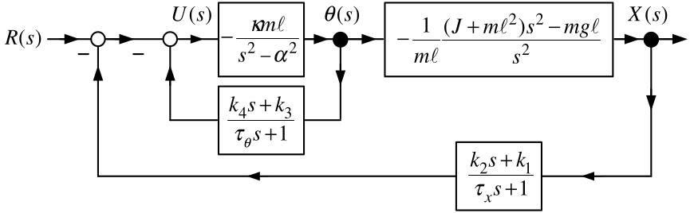
\(\theta\) and \(x\) are each fed back through a PD controller with low pass filtering.
The time constants \(\tau _{\theta }\) and \(\tau _{x}\) are small.
Then \[\begin{aligned} U(s) &=-\frac{k_{1}X(s)+k_{2}sX(s)}{\tau _{x}s+1}-\frac{k_{3}\theta (s)+k_{4}s\theta (s)}{\tau _{\theta }s+1}+R(s) \\ &\approx -k_{1}X(s)-k_{2}sX(s)-k_{3}\theta (s)-k_{4}s\theta (s)+R(s) \end{aligned}\]
In the time domain (state feedback) \[u(t)\approx -k_{1}x(t)-k_{2}\dot{x}(t)-k_{3}\theta (t)-k_{4}\dot{\theta} (t)+r(t).\]
Nested Loop Control Structure

Set \(\tau _{\theta }=0,\tau _{x}=0\) as they are small. The Inner loop reduces to \[\frac{-\dfrac{\kappa m\ell }{s^{2}-\alpha ^{2}}}{1-\dfrac{\kappa m\ell }{ s^{2}-\alpha ^{2}}(k_{4}s+k_{3})}=-\frac{\kappa m\ell }{s^{2}-\kappa m\ell k_{4}s-(\alpha ^{2}+\kappa m\ell k_{3})}.\]
Equivalent block diagram
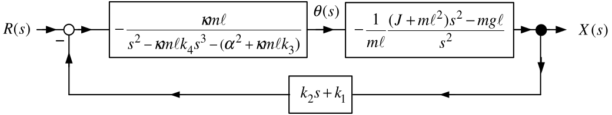
Closed-loop transfer function \(X(s)/R(s)\)
\[\begin{aligned} \frac{X(s)}{R(s)} &=\frac{\dfrac{\kappa m\ell }{ s^{2}-m\kappa \ell k_{4}s-(\alpha ^{2}+m\kappa \ell k_{3})}\dfrac{1}{m\ell } \dfrac{(J+m\ell ^{2})s^{2}-mg\ell }{s^{2}}}{1+\dfrac{\kappa m\ell }{ s^{2}-m\kappa \ell k_{4}s-(\alpha ^{2}+m\kappa \ell k_{3})}\dfrac{1}{m\ell } \dfrac{(J+m\ell ^{2})s^{2}-mg\ell }{s^{2}}(k_{2}s+k_{1})} \\ &=\frac{\kappa (J+m\ell ^{2})s^{2}-\kappa mg\ell }{ s^{4}-\kappa m\ell k_{4}s^{3}-(\alpha ^{2}+\kappa m\ell k_{3})s^{2}+\kappa ((J+m\ell ^{2})s^{2}-mg\ell )(k_{2}s+k_{1})} \\ &=\frac{\kappa (J+m\ell ^{2})s^{2}-\kappa mg\ell }{ s^{4}+(\kappa k_{2}(m\ell ^{2}+J)-m\kappa \ell k_{4})s^{3}+(\kappa k_{1}(m\ell ^{2}+J)-\alpha ^{2}-m\kappa \ell k_{3})s^{2}-\kappa gm\ell k_{2}s-\kappa gm\ell k_{1}}. \end{aligned}\]
\[\frac{X(s)}{R(s)}=\frac{\kappa (J+m\ell ^{2})s^{2}-\kappa mg\ell }{s^{4}+(\kappa k_{2}(m\ell ^{2}+J)-m\kappa \ell k_{4})s^{3}+(\kappa k_{1}(m\ell ^{2}+J)-\alpha ^{2}-m\kappa \ell k_{3})s^{2}-\kappa gm\ell k_{2}s-\kappa gm\ell k_{1}}.\]
To obtain the closed-loop characteristic polynomial \(s^{4}+f_{3}s^{3}+f_{2}s^{2}+f_{1}s+f_{0}\) set \[\begin{aligned} f_{3} &=\kappa k_{2}(m\ell ^{2}+J)-\kappa m\ell k_{4} \\ f_{2} &=\kappa k_{1}(m\ell ^{2}+J)-\alpha ^{2}-\kappa m\ell k_{3} \\ f_{1} &=-g\kappa m\ell k_{2} \\ f_{0} &=-g\kappa m\ell k_{1} \end{aligned}\] or \[\left[ \begin{array}{c} f_{3} \\ f_{2} \\ f_{1} \\ f_{0} \end{array} \right] =\left[ \begin{array}{cccc} 0 & \kappa (m\ell ^{2}+J) & 0 & -\kappa m\ell \\ \kappa (m\ell ^{2}+J) & 0 & -\kappa m\ell & 0 \\ 0 & -\kappa mg\ell & 0 & 0 \\ -\kappa mg\ell & 0 & 0 & 0 \end{array} \right] \left[ \begin{array}{c} k_{1} \\ k_{2} \\ k_{3} \\ k_{4} \end{array} \right] +\left[ \begin{array}{c} 0 \\ -\alpha ^{2} \\ 0 \\ 0 \end{array} \right] .\]
Solve to get \[\left[ \begin{array}{c} k_{1} \\ k_{2} \\ k_{3} \\ k_{4} \end{array} \right] =\left[ \begin{array}{cccc} 0 & \kappa (m\ell ^{2}+J) & 0 & -\kappa m\ell \\ \kappa (m\ell ^{2}+J) & 0 & -\kappa m\ell & 0 \\ 0 & -\kappa mg\ell & 0 & 0 \\ -\kappa mg\ell & 0 & 0 & 0 \end{array} \right] ^{-1}\left[ \begin{array}{c} f_{3} \\ f_{2}+\alpha ^{2} \\ f_{1} \\ f_{0} \end{array} \right] .\] Desired closed-loop poles are \(-r_{1},-r_{2},-r_{3},-r_{4}\), with \(r_i>0\). Set \[\begin{aligned} s^{4}+f_{3}s^{3}+f_{2}s^{2}+f_{1}s+f_{0} &=(s+r_{1})(s+r_{2})(s+r_{3})(s+r_{4}). \end{aligned}\]
Matching coefficients gives \[\begin{aligned} f_{3}&=r_{1}+r_{2}+r_{3}+r_{4},\\ f_{2}&=r_{1}r_{2}+r_{1}r_{3}+r_{1}r_{4} +r_{2}r_{3}+r_{2}r_{4}+r_{3}r_{4},\\ f_{1}&=r_{1}r_{2}r_{3}+r_{1}r_{2}r_{4} +r_{1}r_{3}r_{4}+r_{2}r_{3}r_{4},\\ f_{0}&=r_{1}r_{2}r_{3}r_{4}. \end{aligned}\]
The forward path is type 2.
Not in unity feedback form.

Add the reference input filter \(G_{f}(s)=\dfrac{k_{2}s+k_{1}}{\tau _{x}s+1}.\)
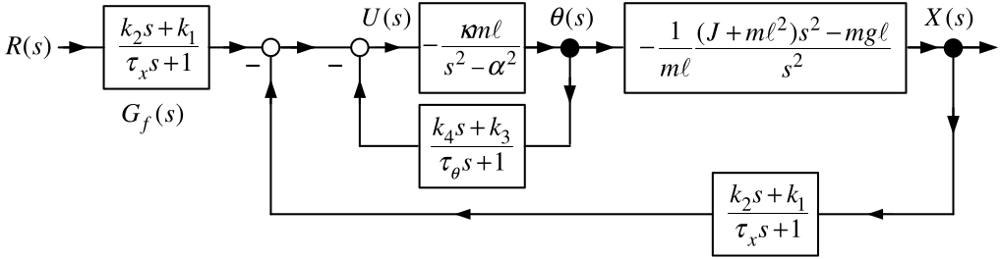
Equivalently it has the unity feedback form.
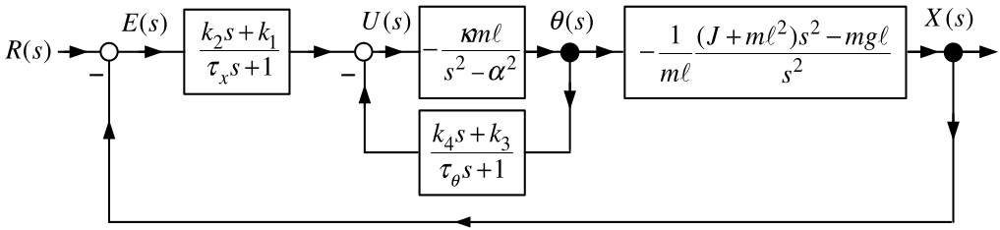
Unity feedback form

The error \(E(s)\) is given by \[\begin{aligned} E(s) &=\frac{1}{1+(k_{2}s+k_{1})\dfrac{ \kappa m\ell }{s^{2}-m\kappa \ell k_{4}s-(\alpha ^{2}+m\kappa \ell k_{3})} \dfrac{1}{m\ell }\dfrac{(J+m\ell ^{2})s^{2}-mg\ell }{s^{2}}}R(s) \\ &=\frac{(s^{2}-m\kappa \ell k_{4}s-\alpha ^{2}-m\kappa \ell k_{3})s^{2}}{s^{4}+(\kappa k_{2}(m\ell ^{2}+J)-m\kappa \ell k_{4})s^{3}+(\kappa k_{1}(m\ell ^{2}+J)-\alpha ^{2}-m\kappa \ell k_{3})s^{2}-\kappa gm\ell k_{2}s-\kappa gm\ell k_{1}}R(s) \\ &=\frac{(s^{2}-m\kappa \ell k_{4}s-\alpha ^{2}-m\kappa \ell k_{3})s^{2}}{(s+r_{1})(s+r_{2})(s+r_{3})(s+r_{4})}R(s). \end{aligned}\]
With \(R(s)=1/s\) or \(R(s)=1/s^{2}\) we have \(sE(s)\) is stable (poles are at \(-r_{1},-r_{2},-r_{3},-r_{4}).\)
By the final value theorem it follows that \(\lim\limits_{t\rightarrow \infty }e(t)=\lim\limits_{s\rightarrow 0}sE(s)=0.\)
Often we don’t know how to design controllers based on a nonlinear model.
However, for linear models a complete theory of controller design is known.
We have already found a linear approximate model for the inverted pendulum.
That linear model is valid for \[(x(t),v(t),\theta (t),\omega (t))\ \ \text{close to}\ (0,0,0,0).\]
\(\qquad (0,0,0,0)\) is an equilibrium point of the inverted pendulum.
Finding a linear approximate model is referred to as linearizing the system.
In general, the linear approximate model is valid around an equilibrium point.
Equilibrium Point of a Nonlinear System \[\frac{dx}{dt}=\sin (x)\]
An equilibrium point or operating point is a value of \(x\) for which \(\sin (x)=0\).
Equilibrium points are solutions to the DiffyQ.
That is, \(x(t)=x_{eq}\) (constant) is a solution to the DiffyQ.
The possible equilibrium points \(x_{eq}\) are \[x_{eq}=0,\pm \pi ,\pm 2\pi ,...\]
Definition Equilibrium Point
Consider the differential equation \[\frac{dx}{dt}=f(x).\]
An equilibrium (operating) point is any value \(x_{eq}\) such that \(f(x_{eq})=0\).
Remark If \(x_{eq}\) is an eq pt, then \(x(t)=x_{eq}\) is a solution to the DiffyQ with I.C. \(x(0)=x_{eq}\).
Example Equilibrium Point \[\frac{dx}{dt}=-x^{3}+1.\]
\(x_{eq}=1\) is the only equilibrium point.
Example Equilibrium Point \[\frac{dx}{dt}=-e^{-x}+1.\]
\(x_{eq}=0\) is the only equilibrium point.
Example Equilibrium Point for a System with an Input \[\frac{dx}{dt}=f(x,u)=-x^{3}+u\] Suppose it is desired to have the system operate at \(x_{eq}=2.\)
Choose \(u\) so that \[f(2,u)=-(2)^{3}+u=0\] or \[u_{eq}=8.\]
\(x_{eq}=2\) is an eq pt with the constant input \(u_{eq}=8\).
Equivalently, \(x(t)=x_{eq}=2\) is a solution to \[\begin{aligned} \frac{dx}{dt} &=-x^{3}+u \\ u(t) &=8 \\ x(0) &=2. \end{aligned}\]
Example \(\ \dfrac{dx}{dt}=-x^{3}+1\)
Equilibrium point is \(x_{eq}=1\).
Do a Taylor series expansion of \(f(x)=-x^{3}+1\) about \(x_{eq}=1\): \[\begin{aligned} f(x) &=f(x_{eq})+f^{\prime }(x_{eq})(x-x_{eq})+\underset{\text{Higher-Order Terms}}{\underbrace{f^{\prime \prime }(x_{eq})\frac{(x-x_{eq})^{2}}{2!} +\cdots }} \\ &=\underset{0}{\underbrace{-x_{eq}^{3}+1}} +(-3x_{eq}^{2})(x-x_{eq})+(-6x_{eq})\frac{(x-x_{eq})^{2}}{2!}+\cdots \end{aligned}\]
The first term \(f(x_{eq})\) is zero because \(x_{eq}\) is an equilibrium point.
We want an approximate model for \(x\) close to \(x_{eq}\).
If \(x-x_{eq}\) is small, then \((x-x_{eq})^{2},(x-x_{eq})^{3},\) etc. are very small.
Set higher-order terms to zero to obtain \[f(x)\approx f^{\prime }(x_{eq})(x-x_{eq})=(-3x_{eq}^{2})(x-x_{eq}).\] Then \[\frac{d}{dt}(x-x_{eq})=f(x)-f(x_{eq})\approx f^{\prime }(x_{eq})(x-x_{eq})=(-3x_{eq}^{2})(x-x_{eq})\]
Example \(\ \dfrac{dx}{dt}=-x^{3}+1\) (continued)
From previous slide: \[\frac{d}{dt}(x-x_{eq})=f(x)-f(x_{eq})\approx f^{\prime }(x_{eq})(x-x_{eq})=(-3x_{eq}^{2})(x-x_{eq})\]
Set \[z\triangleq x-x_{eq}\] so that the linear model is now \[\frac{dz}{dt}=-3z.\]
Linearization of a Nonlinear System \[\frac{dx}{dt}=f(x,u)=-x^{3}+2u^{2}.\]
The desired equilibrium is \[x_{eq}=2,\qquad u_{eq}=2,\] for which \(f(x_{eq},u_{eq})=0\).
Define the perturbations \[\Delta x\triangleq x-x_{eq},\qquad \Delta u\triangleq u-u_{eq}.\]
The first-order Taylor approximation is \[\begin{aligned} f(x,u) &\approx f(x_{eq},u_{eq}) +\left.\frac{\partial f}{\partial x}\right|_{eq}\Delta x +\left.\frac{\partial f}{\partial u}\right|_{eq}\Delta u,\\ \left.\frac{\partial f}{\partial x}\right|_{eq} &=-3x_{eq}^{2}=-12,\\ \left.\frac{\partial f}{\partial u}\right|_{eq} &=4u_{eq}=8. \end{aligned}\]
Therefore, \[\frac{d\Delta x}{dt}=-12\Delta x+8\Delta u.\]
Equivalently, with \(z\triangleq\Delta x\) and \(w\triangleq\Delta u\), \[\boxed{\frac{dz}{dt}=-12z+8w}.\]
Example Linearization of a Nonlinear System
\[\frac{dx}{dt}=f(x,u)=-x^{2}u^{2}+1\]
The desired equilibrium is \[x_{eq}=2,\qquad u_{eq}=\frac12.\]
Define the perturbations \[\Delta x\triangleq x-x_{eq},\qquad \Delta u\triangleq u-u_{eq}.\]
The first-order Taylor approximation is \[\begin{aligned} f(x,u)&\approx f(x_{eq},u_{eq}) +\left.\frac{\partial f}{\partial x}\right|_{eq}\Delta x +\left.\frac{\partial f}{\partial u}\right|_{eq}\Delta u,\\ \left.\frac{\partial f}{\partial x}\right|_{eq} &=-2x_{eq}u_{eq}^{2}=-1,\\ \left.\frac{\partial f}{\partial u}\right|_{eq} &=-2x_{eq}^{2}u_{eq}=-4. \end{aligned}\]
Since \(f(x_{eq},u_{eq})=0\), \[\frac{d\Delta x}{dt}=-\Delta x-4\Delta u.\]
Equivalently, with \(z\triangleq\Delta x\) and \(w\triangleq\Delta u\), \[\boxed{\frac{dz}{dt}=-z-4w}.\]

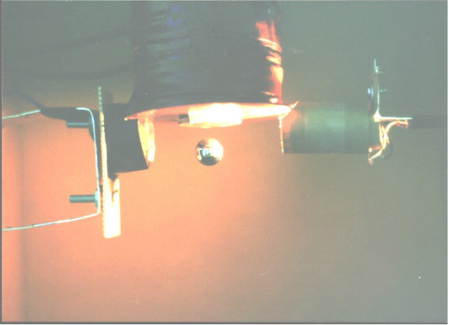
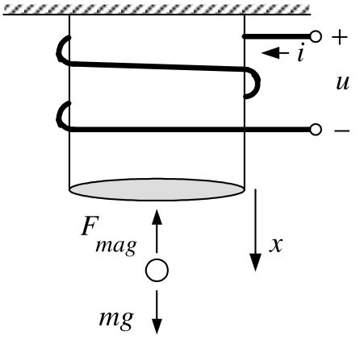
Magnetically levitate a steel ball under an electromagnet.
The electromagnet consists of a wire (coil) wrapped around a core of soft iron.
A voltage \(u\) applied to the coil produces current in the coil.
The magnetic field of the coil’s current magnetizes the soft iron.
The magnetized iron produces a strong magnetic field to keep a steel ball up.
Total flux (flux linkage) in the coil windings due to the current: \(\ \lambda (x,i)\triangleq L(x)i\)
\(L(x)=L_{0}+\dfrac{rL_{1}}{x}\) where \(x\) is the CoM of the steel ball.
- This expression is justified later.

Flux linkage is\(\ \lambda (x,i)\triangleq L(x)i\) where \(L(x)=L_{0}+ \dfrac{rL_{1}}{x}.\)
It turns out that \(L_{1}\ll L_{0}\).
By Faraday’s law and Ohm’s law: \[u-\frac{d}{dt}\underset{\lambda }{\underbrace{\left( L(x)i\right) }}-Ri=0.\]
Magnetic force: \[F_{mag}=-C\frac{i^{2}}{x^{2}},C\text{is a constant.}\]

DiffyQ Model: \[\begin{aligned} \frac{d}{dt}\left( L(x)i\right) +Ri &=u \\ \frac{dx}{dt} &=v \\ m\frac{dv}{dt} &=mg-C\frac{i^{2}}{x^{2}}. \end{aligned}\]
\[\begin{aligned} \frac{d}{dt}\left( L(x)i\right) +Ri &=u \\ \frac{dx}{dt} &=v \\ m\frac{dv}{dt} &=mg-C\frac{i^{2}}{x^{2}}. \end{aligned}\]
Electrical power into the electromagnet: \[iu=i\frac{d}{dt}\left( L(x)i\right) +Ri^{2}=L(x)i\frac{di}{dt}+i^{2}\frac{ \partial L(x)}{\partial x}v+Ri^{2}.\] \(\dfrac{1}{2}L(x)i^{2}\) is the energy stored in the magnetic field of the coil & steel ball.
\(\dfrac{d}{dt}\left( \dfrac{1}{2}L(x)i^{2}\right) =L(x)i\dfrac{di}{dt}+ \dfrac{1}{2}i^{2}\dfrac{\partial L(x)}{\partial x}v.\)
Then \[\begin{aligned} iu &=\frac{d}{dt}\left( \frac{1}{2}L(x)i^{2}\right) -\frac{1}{2}i^{2}\frac{ \partial L(x)}{\partial x}v+i^{2}\frac{\partial L(x)}{\partial x}v+Ri^{2} \\ &=\frac{d}{dt}\left( \frac{1}{2}L(x)i^{2}\right) +Ri^{2}+\frac{1}{2}i^{2} \frac{\partial L(x)}{\partial x}v. \end{aligned}\]
The electrical-power balance is \[iu=\frac{d}{dt}\left(\frac{1}{2}L(x)i^{2}\right) +Ri^{2}+\frac{1}{2}i^{2}\frac{\partial L(x)}{\partial x}v.\]
The supplied power \(iu\) goes into:
- changing the magnetic-field energy \(\dfrac{1}{2}L(x)i^{2}\),
- dissipation as heat \(Ri^{2}\), and
- mechanical power \(\dfrac{1}{2}i^{2}\dfrac{\partial L(x)}{\partial x}v\).
By conservation of energy, the third term is the mechanical power supplied to the steel ball.
Using the mechanical equation gives \[\begin{aligned} m\frac{dv}{dt}&=mg-C\frac{i^{2}}{x^{2}},\\ mv\frac{dv}{dt}-mgv&=-C\frac{i^{2}}{x^{2}}v,\\ \frac{d}{dt}\left(\frac{1}{2}mv^{2}-mgx\right) &=-C\frac{i^{2}}{x^{2}}v. \end{aligned}\]
\(V(x)=-mgx\) is the ball’s potential energy.
The rate of change of its total energy is \[\frac{d}{dt}\left(\frac{1}{2}mv^{2}+V(x)\right) =\frac{d}{dt}\left(\frac{1}{2}mv^{2}-mgx\right) =-C\frac{i^{2}}{x^{2}}v.\]
By conservation of energy, this equals the electrical power \(\dfrac{1}{2}i^{2}\dfrac{\partial L(x)}{\partial x}v\): \[\begin{aligned} \frac{1}{2}i^{2}\frac{\partial L(x)}{\partial x}v &=-C\frac{i^{2}}{x^{2}}v,\\ \frac{1}{2}i^{2}\frac{\partial}{\partial x} \left(L_{0}+\frac{rL_{1}}{x}\right)v &=-C\frac{i^{2}}{x^{2}}v,\\ -\frac{1}{2}i^{2}\frac{rL_{1}}{x^{2}}v &=-C\frac{i^{2}}{x^{2}}v,\\ C &=rL_{1}/2. \end{aligned}\]
Flux linkage is\(\ \lambda (x,i)\triangleq L(x)i\) where \(L(x)=L_{0}+ \dfrac{rL_{1}}{x},\dfrac{\partial L(x)}{\partial x}=-\dfrac{rL_{1}}{x^{2}}.\)
Magnetic Force: \(F_{mag}=-C\dfrac{i^{2}}{x^{2}}.\)
Conservation of Energy: \(C=\dfrac{rL_{1}}{2}.\)
The model is now \[\begin{aligned} \frac{d\left( L(x)i\right) }{dt}+Ri=L(x)\frac{di}{dt}+i\frac{\partial L(x)}{ \partial x}v+Ri &=u \\ \frac{dx}{dt} &=v \\ m\frac{dv}{dt} &=mg-\frac{rL_{1}}{2}\frac{i^{2}}{x^{2}}. \end{aligned}\] Rearrange: \[\begin{aligned} \frac{di}{dt} &=-i\frac{1}{L(x)}\left( -\frac{rL_{1}}{x^{2}}\right) v-\frac{ R}{L(x)}i+\frac{1}{L(x)}u \\ \frac{dx}{dt} &=v \\ \frac{dv}{dt} &=g-\frac{rL_{1}}{2m}\frac{i^{2}}{x^{2}} \end{aligned}\]
\[\begin{aligned} \frac{di}{dt} &=-i\frac{1}{L(x)}\left( -\frac{rL_{1}}{x^{2}}\right) v-\frac{ R}{L(x)}i+\frac{1}{L(x)}u \\ \frac{dx}{dt} &=v \\ \frac{dv}{dt} &=g-\frac{rL_{1}}{2m}\frac{i^{2}}{x^{2}} \end{aligned}\] The state variables are \(i,x,v\) and the state is \[\left[ \begin{array}{c} i \\ x \\ v \end{array} \right] .\] Recall \(L_{1}\ll L_{0}\) and \(x\geq r\), so \(L(x)=L_{0}+\dfrac{rL_{1}}{x}\leq L_{0}+L_{1}\approx L_{0}.\)
Replace \(L(x)\) with \(L_{0}\): \[\begin{aligned} \frac{di}{dt} &=\frac{rL_{1}}{L_{0}}\frac{i}{x^{2}}v-\frac{R}{L_{0}}i+\frac{ 1}{L_{0}}u \\ \frac{dx}{dt} &=v \\ \frac{dv}{dt} &=g-\frac{rL_{1}}{2m}\frac{i^{2}}{x^{2}}. \end{aligned}\]
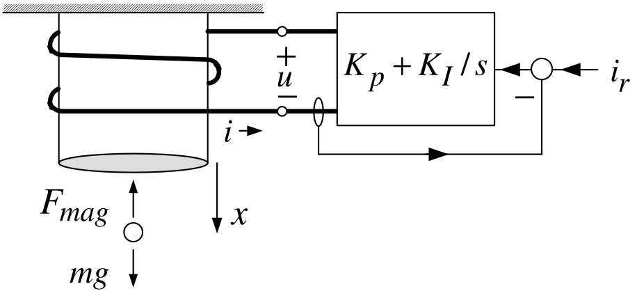
We send a current command \(i_{r}\) to the amplifier.
With high-gains \(K_{P},K_{I}\) the amplifier quickly forces \(i(t)\rightarrow i_{r}(t).\)
So we can consider the current \(i(t)\) as the input. \[\begin{aligned} \frac{dx}{dt} &=v \\ \frac{dv}{dt} &=g-\frac{rL_{1}}{2m}\frac{i^{2}}{x^{2}}. \end{aligned}\]
This is still a nonlinear statespace model.
\[\begin{aligned} \frac{dx}{dt} &=v \\ \frac{dv}{dt} &=g-\frac{rL_{1}}{2m}\frac{i^{2}}{x^{2}}. \end{aligned}\]
Let \(x=x_{eq},v=v_{eq}=0\) be the desired equilibrium point. \[\begin{aligned} \frac{dx_{eq}}{dt} &=v_{eq} \\ \frac{dv_{eq}}{dt} &=g-\frac{rL_{1}}{2m}\frac{i_{eq}^{2}}{x_{eq}^{2}}. \end{aligned}\]
The \(1^{st}\) eqn holds because \(x_{eq}\) is a constant and \(v_{eq}=0\).
The 2\(^{nd}\) eqn requires \(g=\dfrac{rL_{1}}{2m}\dfrac{i_{eq}^{2}}{ x_{eq}^{2}}\) or \[i_{eq}=x_{eq}\sqrt{\dfrac{2mg}{rL_{1}}}.\]
\[\begin{aligned} \frac{dx}{dt}&=v,\\ \frac{dv}{dt}&=f(x,i) =g-\frac{rL_{1}}{2m}\frac{i^{2}}{x^{2}}. \end{aligned}\]
Let \[\Delta x\triangleq x-x_{eq},\qquad \Delta i\triangleq i-i_{eq}.\]
Dropping higher-order terms, the Taylor expansion becomes \[\begin{aligned} f(x,i) &\approx f(x_{eq},i_{eq}) +\left.\frac{\partial f}{\partial x}\right|_{eq}\Delta x +\left.\frac{\partial f}{\partial i}\right|_{eq}\Delta i\\ &=0 +\frac{rL_{1}}{m}\frac{i_{eq}^{2}}{x_{eq}^{3}}\Delta x -\frac{rL_{1}}{m}\frac{i_{eq}}{x_{eq}^{2}}\Delta i\\ &=\frac{2g}{x_{eq}}\Delta x -\frac{2g}{i_{eq}}\Delta i. \end{aligned}\]
Here \[\frac{rL_{1}}{m}\frac{i_{eq}^{2}}{x_{eq}^{3}} =\frac{2g}{x_{eq}}, \qquad \frac{rL_{1}}{m}\frac{i_{eq}}{x_{eq}^{2}} =\frac{2g}{i_{eq}}.\]
\[\begin{aligned} \dfrac{dx}{dt} &=v \\ \dfrac{dv}{dt} &=\frac{2g}{x_{eq}}(x-x_{eq})-\frac{2g}{i_{eq}}(i-i_{eq}). \end{aligned}\] \(\dfrac{dv_{eq}}{dt}=0,\dfrac{dx_{eq}}{dt}=0\Longrightarrow\) \[\begin{aligned} \frac{d}{dt}(x-x_{eq}) &=v-v_{eq} \\ \frac{d}{dt}(v-v_{eq}) &=\frac{2g}{x_{eq}}(x-x_{eq})-\frac{2g}{i_{eq}} (i-i_{eq}). \end{aligned}\]
Set \(\Delta x\triangleq x-x_{eq},\Delta v\triangleq v-v_{eq},\Delta i\triangleq i-i_{eq}\): \[\begin{aligned} \frac{d}{dt}\Delta x &=\Delta v \\ \frac{d}{dt}\Delta v &=\frac{2g}{x_{eq}}\Delta x-\frac{2g}{i_{eq}}\Delta i \end{aligned}\] or \[\frac{d}{dt}\left[ \begin{array}{c} \Delta x \\ \Delta v \end{array} \right] =\underset{A}{\underbrace{\left[ \begin{array}{cc} 0 & 1 \\ \dfrac{2g}{x_{eq}} & 0 \end{array} \right] }}\left[ \begin{array}{c} \Delta x \\ \Delta v \end{array} \right] +\underset{b}{\underbrace{\left[ \begin{array}{c} 0 \\ -\dfrac{2g}{i_{eq}} \end{array} \right] }}\Delta i.\]
\[\frac{d}{dt}\left[ \begin{array}{c} \Delta x \\ \Delta v \end{array} \right] =\underset{A}{\underbrace{\left[ \begin{array}{cc} 0 & 1 \\ \dfrac{2g}{x_{eq}} & 0 \end{array} \right] }}\left[ \begin{array}{c} \Delta x \\ \Delta v \end{array} \right] +\underset{b}{\underbrace{\left[ \begin{array}{c} 0 \\ -\dfrac{2g}{i_{eq}} \end{array} \right] }}\Delta i.\] More compactly:
\[\frac{d}{dt}\left[ \begin{array}{c} \Delta x \\ \Delta v \end{array} \right] =A\left[ \begin{array}{c} \Delta x \\ \Delta v \end{array} \right] +b\Delta i\]
This is a linear statespace model.
\(\Delta x=x-x_{eq}\) and \(\Delta v=v-v_{eq}\) are the state variables.
\(\Delta i=i-i_{eq}\) is the input.
\[\begin{aligned} \frac{d}{dt}\left[ \begin{array}{c} \Delta x \\ \Delta v \end{array} \right] &=\underset{A}{\underbrace{\left[ \begin{array}{cc} 0 & 1 \\ \dfrac{2g}{x_{eq}} & 0 \end{array} \right] }}\left[ \begin{array}{c} \Delta x \\ \Delta v \end{array} \right] +\underset{b}{\underbrace{\left[ \begin{array}{c} 0 \\ -\dfrac{2g}{i_{eq}} \end{array} \right] }}\Delta i \\ \Longrightarrow \frac{d\Delta v}{dt} &=\frac{d^{2}}{dt^{2}}\Delta x=\frac{2g }{x_{eq}}\Delta x-\frac{2g}{i_{eq}}\Delta i. \end{aligned}\] Laplace transform: \[s^{2}\Delta X(s)-s\Delta x(0)-\Delta \dot{x}(0)=\frac{2g}{x_{eq}}\Delta X(s)- \frac{2g}{i_{eq}}\Delta I(s)\] or \[\Delta X(s)=\underset{\text{transfer function}}{\underbrace{-\frac{\dfrac{2g }{i_{eq}}}{s^{2}-\dfrac{2g}{x_{eq}}}}}\Delta I(s)+\frac{s\Delta x(0)+\Delta \dot{x}(0)}{s^{2}-\dfrac{2g}{x_{eq}}}.\]
Note the similarity to the transfer function of the inverted pendulum!
The TF has poles at \(\pm \sqrt{\dfrac{2g}{x_{eq}}}\) and is therefore unstable.
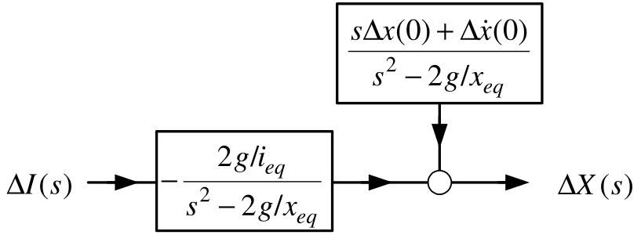
\[\Delta X(s)=\underset{\text{transfer function}}{\underbrace{-\frac{2g/i_{eq} }{s^{2}-2g/x_{eq}}}}\Delta I(s)+\frac{s\Delta x(0)+\Delta \dot{x}(0)}{ s^{2}-2g/x_{eq}}.\]
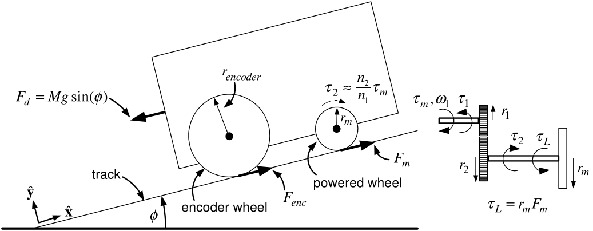
Motor shaft with gear 1 has moment of inertia \(J_{1}.\)
Wheel shaft with gear 2 has moment of inertia \(J_{2}\).
\(\quad F_{m}\mathbf{\hat{x}}\) is the force exerted on the powered wheels by the track.
\(-F_{m}\mathbf{\hat{x}}\) is the force exerted on the track by the powered wheels.
\(\quad\)Set \(F_{enc}=0\) as it is neglible.
\(\quad \tau _{1}\) is the torque exerted on gear 1 by gear 2
\(\quad \tau _{2}\) is the (reaction) torque exerted on gear 2 by gear 1.
Mechanical Equations
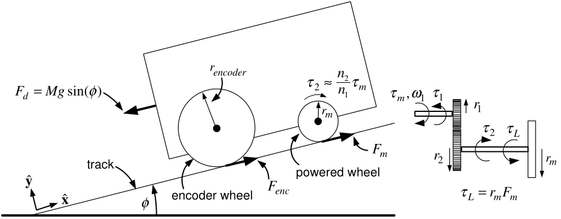
\[\begin{aligned} J_{1}\frac{d\omega _{1}}{dt} &=\tau _{m}-\tau _{1} \\ J_{2}\frac{d\omega _{2}}{dt} &=\tau _{2}-r_{m}F_{m} \end{aligned}\]
Use \(\omega _{1}=\dfrac{n_{2}}{n_{1}}\omega _{2}\) and \(\tau _{2}=\dfrac{ n_{2}}{n_{1}}\tau _{1}\) to obtain \[\underset{J}{\underbrace{\left( J_{1}\left( \frac{n_{2}}{n_{1}}\right) ^{2}+J_{2}\right) }}\frac{d\omega _{2}}{dt}=\frac{n_{2}}{n_{1}}\tau _{m}-F_{m}r_{m}\]
Mechanical Equations

\[\begin{aligned} J\frac{d\omega _{2}}{dt} &=\frac{n_{2}}{n_{1}}\tau _{m}-F_{m}r_{m} \\ M\frac{dv}{dt} &=F_{m}-F_{d}. \end{aligned}\] No slip condition \(\ r_{enc}\omega _{enc}=r_{m}\omega _{2}=v.\)
With \(\omega _{2}=v/r_{m}\) and eliminating \(F_{m}\) we have \[\left( \frac{J}{r_{m}^{2}}+M\right) \frac{dv}{dt}=\frac{1}{r_{m}}\frac{n_{2} }{n_{1}}\tau _{m}-F_{d}.\]
Electrical Equations

\[\begin{aligned} L\frac{di}{dt} &=-Ri(t)-K_{b}\omega _{1}(t)+v_{a}(t) \\ \tau _{m} &=K_{T}i(t). \end{aligned}\]
Electrical Equations
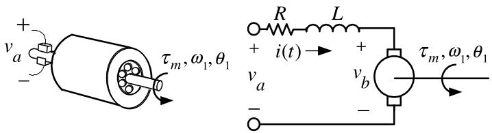
\[\begin{aligned} L\frac{di}{dt} &=-Ri(t)-K_{b}\omega _{1}(t)+v_{a}(t) \\ \tau _{m} &=K_{T}i(t). \end{aligned}\] With \(\omega _{1}=\dfrac{n_{2}}{n_{1}}\omega _{2}=\dfrac{n_{2}}{n_{1}}\dfrac{ v}{r_{m}}\) we have \[\begin{aligned} L\frac{di}{dt} &=-Ri(t)-\underset{v_{b}(t)}{\underbrace{\frac{K_{b}}{r_{m}} \frac{n_{2}}{n_{1}}v(t)}}+v_{a}(t) \\ \tau _{m} &=K_{T}i(t). \end{aligned}\]
Equations of Motion \[\begin{aligned} L\frac{di}{dt} &=-Ri(t)-\frac{K_{b}}{r_{m}}\frac{n_{2}}{n_{1}}v(t)+v_{a}(t) \left( \frac{J}{r_{m}^{2}}+M\right) \frac{dv}{dt} &=\left( \frac{n_{2}}{ n_{1}}\frac{1}{r_{m}}\right) K_{T}i(t)-F_{d} \\ \frac{dx}{dt} &=v. \end{aligned}\] Laplace Transform \[\begin{aligned} I(s) &=\frac{V_{a}(s)-V_{b}(s)}{sL+R} \\ V_{b}(s) &=\underset{K_{b}^{\prime }}{\underbrace{K_{b}\frac{n_{2}}{n_{1}} \frac{1}{r_{m}}}}v(s) \\ s\underset{M^{\prime }}{\underbrace{\left( \frac{J}{r_{m}^{2}}+M\right) }} v(s) &=\underset{K_{T}^{\prime }}{\underbrace{\frac{n_{2}}{n_{1}}\frac{1}{ r_{m}}K_{T}}}I(s)-\frac{F_{d}}{s}. \end{aligned}\]
\(K_{T}^{\prime }\triangleq K_{T}\dfrac{n_{2}}{n_{1}}\dfrac{1}{r_{m}},\) \(K_{b}^{\prime }\triangleq K_{b}\dfrac{n_{2}}{n_{1}}\dfrac{1}{r_{m}},\) \(M^{\prime }\triangleq \dfrac{J}{r_{m}^{2}}+M\)
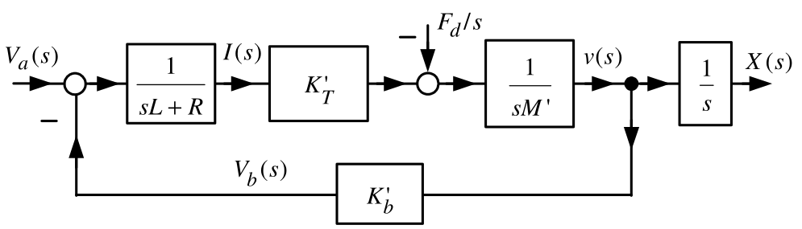
Set \(L=0\) and \(K_{D}\triangleq \dfrac{R}{K_{T}^{\prime }}=\dfrac{R}{ K_{T}\dfrac{n_{2}}{n_{1}}\dfrac{1}{r_{m}}}\)
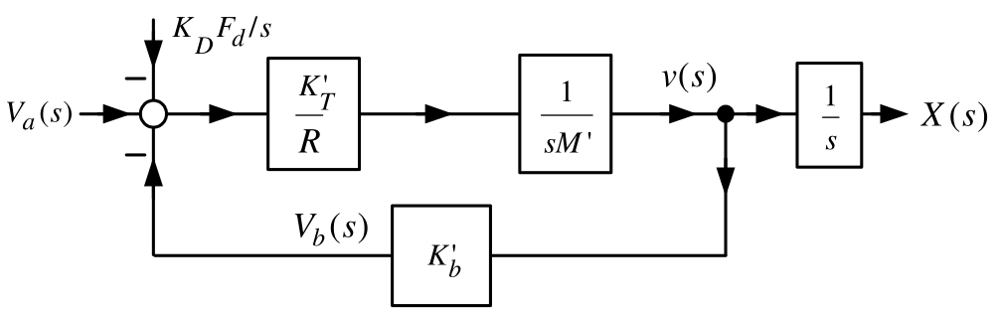

Define \[G(s)\triangleq \frac{\dfrac{K_{T}^{\prime }}{R}\dfrac{1}{sM^{\prime }}}{ 1+K_{b}^{\prime }\dfrac{K_{T}^{\prime }}{R}\dfrac{1}{sM^{\prime }}}\frac{1}{s }=\frac{K_{T}^{\prime }}{sRM^{\prime }+K_{b}^{\prime }K_{T}^{\prime }}\frac{1 }{s}=\frac{\dfrac{K_{T}^{\prime }}{RM^{\prime }}}{s+\dfrac{K_{b}^{\prime }K_{T}^{\prime }}{RM^{\prime }}}\frac{1}{s}=\frac{b}{s\left( s+a\right) }\]
Simplified block diagram

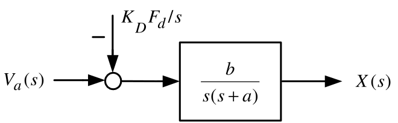
\[X(s)=\frac{b}{s\left( s+a\right) }V_{a}(s)-\frac{b}{s\left( s+a\right) }K_{D} \frac{F_{d}}{s}.\]
\(K_{D}F_{d}\) is an input voltage disturbance.
Equivalent to the actual disturbance \(F_{d}\).
\(K_{D}F_{d}=\dfrac{R}{K_{T}\dfrac{n_{2}}{n_{1}}\dfrac{1}{r_{m}}}F_{d}= \dfrac{n_{2}}{n_{1}}\dfrac{r_{m}F_{D}}{K_{T}}R\) has units of Volts.
\(bK_{D}F_{d}=\dfrac{K_{T}^{\prime }}{RM^{\prime }}\dfrac{R}{ K_{T}^{\prime }}Mg\sin (\phi )=\dfrac{Mg\sin (\phi )}{M^{\prime }}=\dfrac{ Mg\sin (\phi )}{J/r_{m}^{2}+M}\). \[\frac{d^{2}x(t)}{dt^{2}}=-ax(t)+bv_{a}(t)-\dfrac{Mg\sin (\phi )}{ J/r_{m}^{2}+M}u_{s}(t).\]

← Course Home · System Modeling and Control · Chapter 13